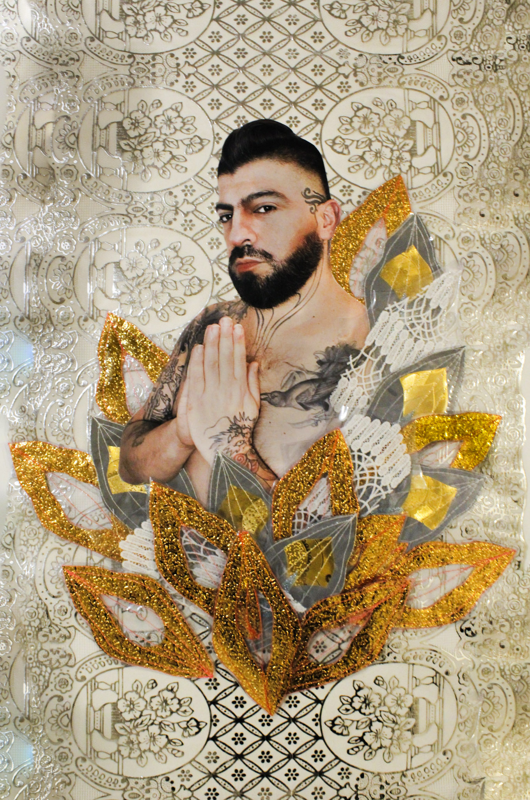
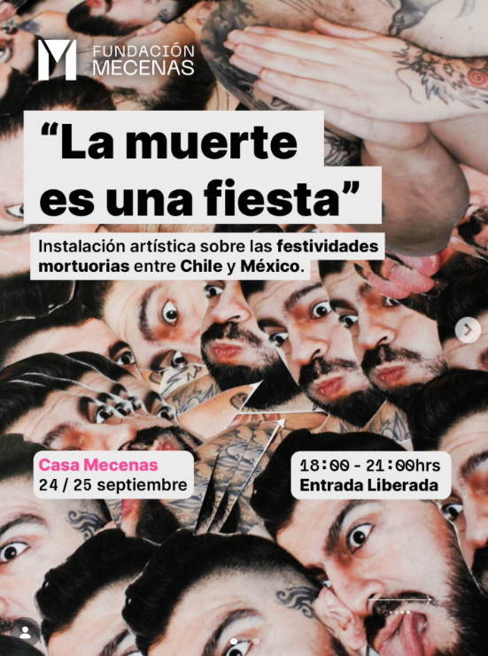
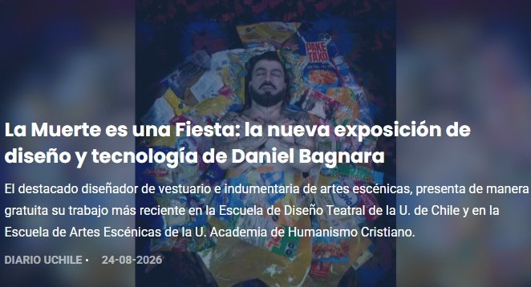
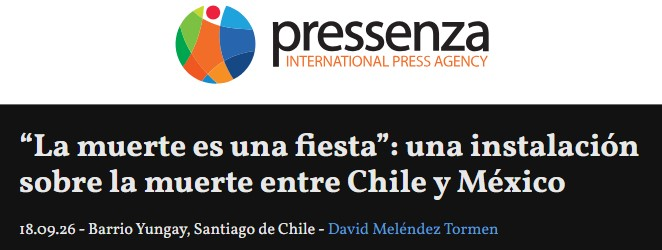
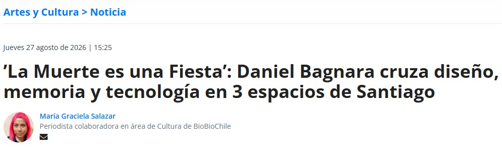
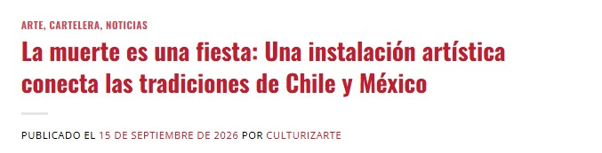

Exposición · 2026
¿Cómo serán los rituales de la muerte en el futuro?
La Obra
La muerte es una fiesta surge de una investigación desarrollada entre Chile y México sobre los ritos y las formas de celebración de la muerte. Dos estructuras autómatas activan un espacio en el que cuerpo, movimiento, tecnología e indumentaria se relacionan para construir una experiencia programada.
Artista

Daniel Bagnara Mena, artista visual, diseñador escénico y docente, desarrolla una práctica que cruza las artes visuales y escénicas a partir del cuerpo, la materialidad, el textil y el territorio. Su investigación explora las relaciones y transformaciones entre cuerpo y materia, articulando procesos de experimentación, diseño y construcción escénica.
@danielbagnaramenaPRIMERA ACTIVACION
El 31 de agosto inauguramos oficialmente La Muerte es una Fiesta con la primera activación de sus autómatas en el hall del Departamento de Teatro de la Universidad de Chile (DETUCH).
Entre el 31 de agosto y el 11 de septiembre, la muestra estuvo abierta al público con una propuesta que cruza diseño, textil y tecnología interactiva, incorporando mecanismos de movimiento y sonido para explorar las relaciones entre muerte, memoria, territorio e identidad local.
(LINK DE PRENSA EN RELACIÓN A ESTA PRIMERA MUESTRA)
SEGUNDA ACTIVACION
El 24 de septiembre, La Muerte es una Fiesta llegó a Fundación Mecenas para su segunda activación, abriendo un nuevo espacio de encuentro entre el público y la obra de Daniel Bagnara Mena.
Durante dos jornadas, la instalación continuó su recorrido, proponiendo nuevas formas de acercarse a las tradiciones mortuorias y a los imaginarios que construimos en torno a la muerte.
(AFICHE DE LA SEGUNDA ACTIVACION EN FUNDACION MECENAS)

Entrevistas
Radio Uniacc
Como parte de la bitácora de La Muerte es una Fiesta, estuvimos en Radio UNIACC, en el programa ComunicArte, conversando sobre la exposición, sus procesos creativos y las estéticas funerarias populares que la atraviesan.
Les invitamos a ver la entrevista completa y conocer más sobre este proyecto:
PRENSA / ARTÍCULOS

DIARIO UCHILE:
PRESSENZA:
BIOBIO CHILE:
CULTURIZARTE:Equipo
English
Death Is a Party | What will the rituals of death look like in the future?
Death Is a Party emerges from research conducted between Chile and Mexico into ritual practices and forms of celebration surrounding death. Two automata structures activate a space where body, movement, technology, and costume design come together to create a programmed experience.
Daniel Bagnara Mena is a visual artist, scenic designer, and educator whose practice bridges the visual and performing arts through the body, materiality, textiles, and territory. His work explores the relationships and transformations between body and matter, bringing together processes of experimentation, design, and scenic construction.